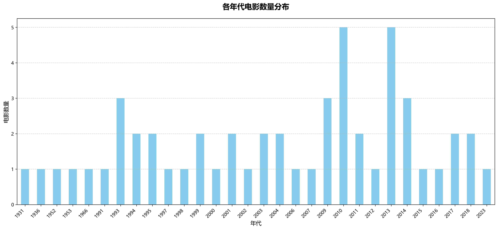
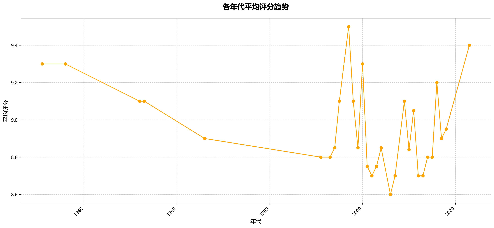
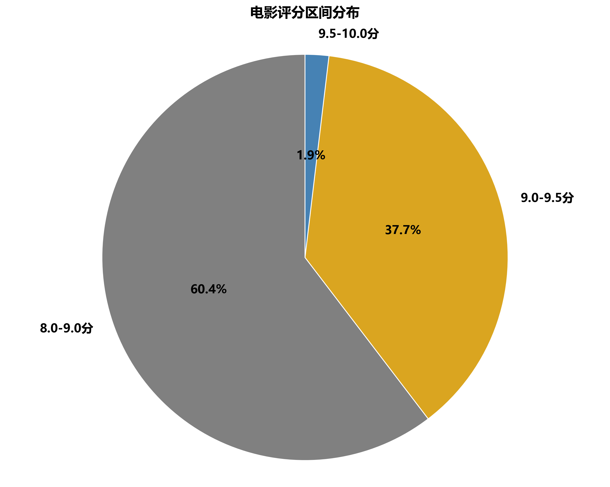

年代变化趋势
探索豆瓣喜剧电影数量和评分随年代的变化趋势，了解喜剧电影的发展历程。


评分区间
分析豆瓣喜剧电影的评分分布情况，了解观众对不同类型喜剧的喜好程度。

主要类型
分析豆瓣喜剧电影的类型分布和特征，了解不同类型喜剧的市场表现。
探索豆瓣喜剧电影数量和评分随年代的变化趋势，了解喜剧电影的发展历程。
分析豆瓣喜剧电影的评分分布情况，了解观众对不同类型喜剧的喜好程度。
分析豆瓣喜剧电影的类型分布和特征，了解不同类型喜剧的市场表现。